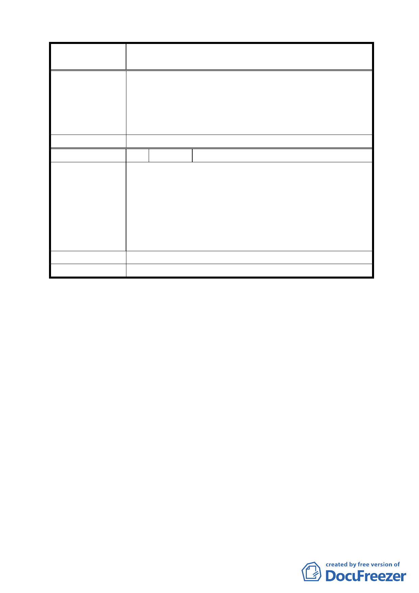

案名
委員會決議
編號
陳情理由
建議辦法
委員會決議
變更臺北市中山區長春段二小段 559-5 地號等道路用
地、第三種住宅區為第三種住宅區及綠地計畫案
為加速本案更新事業之期程，希依本案都市更新委員會
於民國 95 年 11 月 27 日之決議，於細部計畫公展期間
辦理本案建造執照預審作業，待細部計畫變更案核定公
告後，可儘速領取本案建造執照，以進行本案更新事業
後續工作。
同決議一。
4 陳情人 趙淑珠、賴玉明
感謝政府德意將本區域內老舊破敗髒亂不堪之房屋及土
地，劃定為臺北市都市更新範圍並給予容積獎勵，本更
新單元於 91 年 5 月 20 日完成都市更新事業概要第一階
段程序，復於 95 年 11 月 27 日經更新審議委員會審議通
過，並提修正報告報府核備中。其中，本案有關細部計
畫變更事宜，係依都市更新條例第二十條規定辦理，並
依規定需經 貴會審議通過。
請儘速准予通過，俾早日依法完成更新事業。
同決議一。
討論事項七
案名：擬劃定「臺北市士林區海光段一小段 248 地號等 9 筆土地
為更新單元」都市更新計畫案
說明：
一、本件係市府以 96 年 1 月 30 日府都新字第 09531027800 號函
送到會。
二、申請單位：臺北市政府捷運工程局。
三、法令依據：都市計畫法第 66 條、都市更新條例第 5 條、第 6
條、第 8 條、第 9 條、第 11 條及都市更新條例施
行細則第 5 條。
四、計畫位置：詳計畫圖所示。
五、計畫理由及內容：詳計畫書。
決議：照案通過。
九